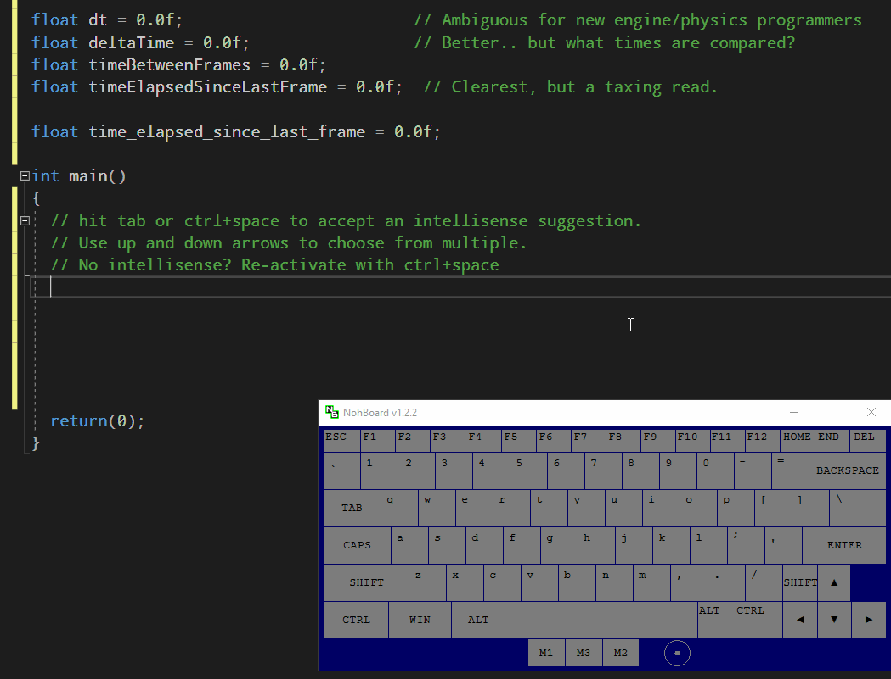
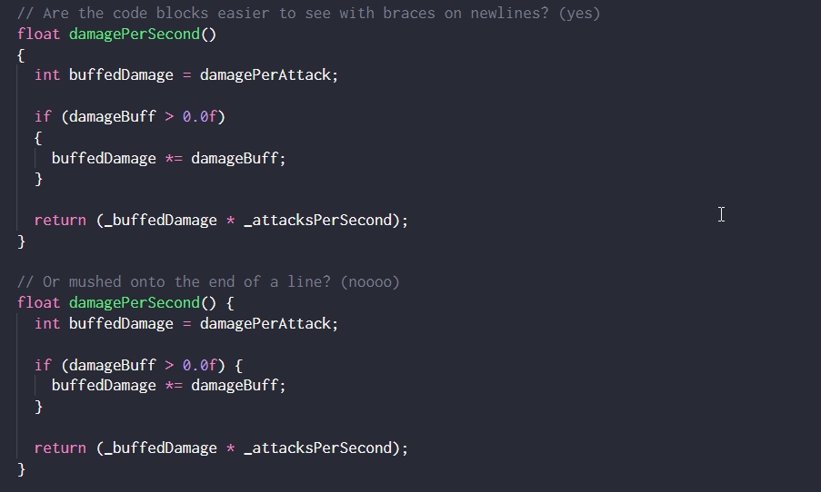
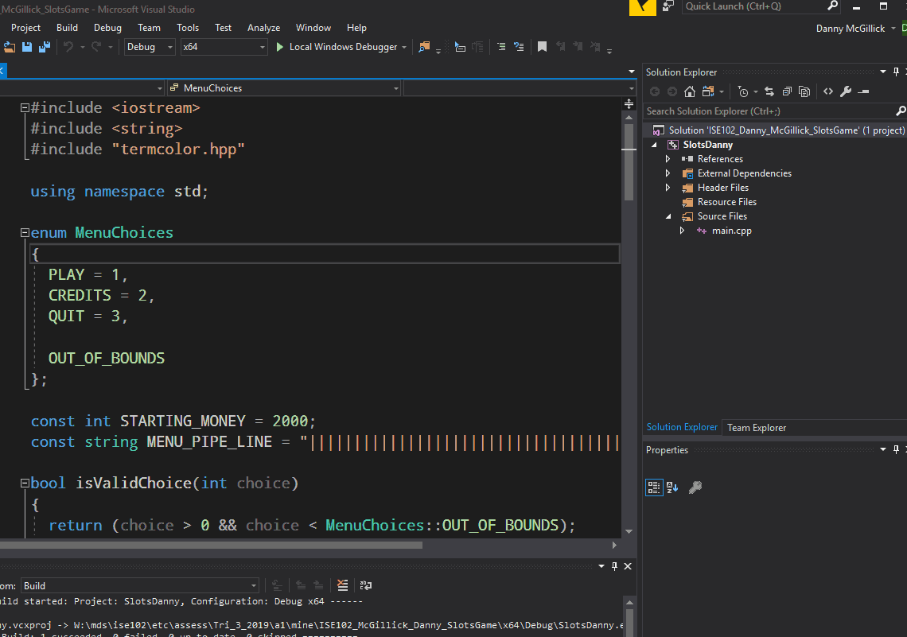
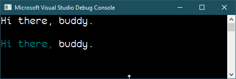

In every team or project we use coding conventions so we humans can read the code a little better. It helps your debugging and my marking.
Using naming conventions correctly is worth marks, and they’re easy marks so go through and check!
Naming conventions
Code:
///////// Constants ///////////////////////////// // Numbers that won't change. // Use ALL_UPPER_CASE with underscores between words const int MAX_HEALTH = 100; const int JUPITER_MOONS_KNOWN = 79; // look it up. const float HEADSHOT_DAMAGE_MULTIPLY = 2.5f; const string DEFAULT_INVITE_TEXT = "You have been invited to rumble.";
/////// Regular Variables ///////////////////////////// // Storing data in memory. Read and write. // Use camelCaseNaming. int score = 0; string myTag = ""; string myRealName = ""; // Use a name for booleans that would answer a question, and includes the question. // Is it hot? Yes, it is true that the tea is hot. // Has the player quit? Yes, the player has quit. bool playerHasQuit = false; bool allPlayersReady = false; // are can be skipped here without hurting understanding. bool teaIsHot = true; bool prefers // An adjective using -able or -ible is good for describing an object's capabilities bool destructable = true; bool upgradable = false; // Often, though, people use these adjectives as nouns for categories of things. A gun or armour or vehicle could be known as an "upgradable". // prefixing with "is" can make it less ambiguous, though a little harder to read. bool isDestructable = true; bool isUpgradable = false;
Before we had autocomplete (intellisense) short variable names prevailed because they were easier to type. This made sharing code difficult, because variables were ambiguous.
// Each of these are names that might be used for the difference between the // time now (delta) and the time the last frame was drawn to the screen. float dt =0.0f; // Ambiguous for new engine/physics programmers float deltaTime =0.0f; // Better.. but what times are compared? float timeBetweenFrames =0.0f; float timeElapsedSinceLastFrame =0.0f; // Clearest, but a taxing read. // INTERESTING NOTE: // Google names variables like lower case constants. Long names are a bit easier to read. float time_elapsed_since_last_frame = 0.0f;
Autocomplete

These guys {} are curly braces. They’re used in if, while, do.. while, functions and other places to show that a series of code statements belong together.
We’ll prefer curly braces on their own lines: they are easier to line up visually.
Be aware some companies/projects take the opposite approach. Conventions aren’t universal; you’ll have to adapt to style of the team you’re on, so don’t get too precious/attached.

Here are some naming conventions for functions:
////// Functions ////////////////////////////////////// // Use camelCaseNaming like regular variables. // float damagePerSecond() { // Notice how you can immediately tell I'm using my private variables // to calculate a return value. The leading _ tells us. return (_damagePerAttack * _attacksPerSecond); } // function arguments: the same naming convention as public variables // local function variables: also the same convention as public variables. float damagePerSecond(int shotType) { int damage = _damagePerAttack * _attacksPerSecond; if (shotType == HEAD_SHOT) { damage *= HEADSHOT_DAMAGE_MULTIPLIER; } return (damage); } // How it would look inside a Hero class cpp file with scoping. float Hero::damagePerSecond() { // Notice how you can immediately tell I'm using my private variables // to calculate a return value. The leading _ tells us. return (_damagePerAttack * _attacksPerSecond); }
Whitespace, Comments

Name your file like so: ISE102_Lastname_Firstname_GameName.7z
Your game name might be SlotMachine or Slots Game or Millionaire Slots Queen. Just make it clear it’s a slot machine game.
Mine in the example gif was: ISE102_Mcgillick_Danny_SlotsGame.7z
Now you have the header file available in your project. Our next step is to use it.
We need to:
a) Include it in our project
b) use it with a cout statement.
We basically drop colours into our output stream like packets of dye.
#include "termcolor.hpp"; ... // Here's a cout statement without colours added: cout << "Hi there, buddy." << endl << endl; // We can add a colour where needed. Remember to reset to the normal console colours when you're done. cout << termcolor::cyan << "Hi there, " << termcolour::reset << "buddy." << endl << endl; // Notice I broke up the sentence so I could change colours part way through.
Use termcolor:: to access the colours/commands you need. Intellisense will provide a list.

Output with some cyan
ADD A ZIP FILE WITH EXAMPLE SOLUTION
Tap tap tap.